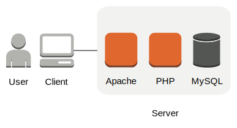

WordPress Bootcamp
Course outline for the Seattle General Assembly WordPress Bootcamp.
WordPress Bootcamp Chat
Table of Contents
Overview
What is WordPress?
WordPress is an open source publishing platform that powers over 20% of the web. It began as a blogging platform, and has grown into a full-fledged content management system (CMS).
WordPress.com vs WordPress.org
WordPress.com
Software as a Service (SaaS)
Pros
- Turn-key
- No need to worry about infrastructure
- Hard to break
Cons
- Restricted functionality
- Limited plugin/theme library
WordPress.org
Self-managed system
Pros
- Highly customizable
- Total control of content
- Full plugin/theme library
Cons
How The Internet Works
A quick overview of how a browser communicates with a website.
- The browser makes a request to a server by asking for a URL.
- The server receives the request.
- if the request doesn't make sense, it responds with an error message (404, 500, etc).
- if the request can be processed, send back some HTML.
- The browser receives the HTML.
- The browser parses the HTML and applies CSS.

Setting up your development environment
OS X/Mac
- Download the WordPress Core files.
- Drag the
wordpress folder from Downloads into Documents.
- Install Sublime Text 3
- Drag the Sublime Text icon from your
Downloads folder to your Applications folder.
- Install MAMP:
- Download the package.
- Double click the file to begin the installation wizard.
- Keep the default settings.
- Enter your password if prompted.
- Configure MAMP
- Click 'Applications' -> 'MAMP' -> 'MAMP' to start MAMP
- Click 'Preferences'
- Under 'Web Server' click the folder next to 'Document Root'
- Navigate to 'Documents' and select your 'wordpress' folder.
- Click 'Select'.
- Click 'OK'
- Click 'Start Servers'
- Create a database
- In your browser, navigate to http://localhost:8888/MAMP
- Click the link to 'phpMyAdmin' (below MySQL).
- Click the 'Databases' tab in the top row.
- Enter
wordpress in the 'Database name' text field.
- Click 'Create'.
- Install WordPress
- In your browser, navigate to http://localhost:8888
- Select your language and click 'Continue'
- Click 'Let's go!'
- Enter the following information:
- Database Name:
wordpress
- User Name:
root
- Password:
root
- Database Host:
localhost
- Table Prefix:
wp_
- Click 'Submit'.
- Click 'Run the install'.
- Enter the following information:
- Site Title:
WordPress Bootcamp
- Username:
admin
- Password:
admin
- Your E-mail:
[your email address]
- Click 'Install WordPress'.
- Click 'Log In'.
- Enter the following information:
- Username:
admin
- Password:
admin
Toggle Developer Mode In Safari
- Open Safari.
- 'Safari' -> 'Preferences' -> 'Advanced' -> 'Show Develop menu in menu bar'
Creating a Child Theme
For a more in-depth tutorial, visit the WordPress Codex Article.
- Open Sublime Text.
- Click 'File' -> 'Open'
- Navigate to your WordPress directory (
Documents/wordpress).
- Use the sidebar to navigate to
wp-content/themes.
- Create a new folder named
twentyfifteen-child.
- Create a file in
twentyfifteen-child named style.css.
- Copy the child theme header template from the Codex into
style.css and save the file.
- Example
- Create a file in
twentyfifteen-child named functions.php.
- The file must begin with
<?php.
- On the next line, copy the
wp_enqueue_scripts code snippet from the Codex into functions.php and save the file.
- Example
- Navigate to your WordPress Admin panel -> 'Appearance' -> 'Themes'
- Select your new child theme.
Uploading to a Server
In this class, we will be using an FTP client named 'Filezilla' to transfer our files between our development and production environments.
Transfering files with Filezilla
- Open Filezilla.
- Enter the following information in the top bar:
- Host:
FTP Host
- Username:
FTP Username
- Password:
FTP Password
- Port: [blank]
- Click 'quickconnect'.
- Check the 'Always trust certificate in future sessions' and click 'OK'.
- In the local pane (bottom left), navigate to your local WordPress folder (
Documents/wordpress).
- Drag the contents of the WordPress folder to the remote pane (bottom right).
HTML Example
- Open the
example package in Sublime Text
- Set the MAMP Document Root to
example/html.
- MAMP -> 'Preferences' -> 'Web Server'
- In your browser, navigate to http://localhost:8888.
- View the page source.
- Use the URL view-source:http://localhost:8888/
- Keyboard shortcuts:
- Chrome:
cmd + option + u
- Firefox:
cmd + u
- Safari:
cmd + option + u
- Leave these pages open to compare with the results from the next section.
PHP Example
- Open the
example package in Sublime Text
- Set the MAMP Document Root to
example/php.
- In your browser, navigate to http://localhost:8888.
- View the page source.
- Use the URL view-source:http://localhost:8888/
- Keyboard shortcuts:
- Chrome:
cmd + option + u
- Firefox:
cmd + u
- Safari:
cmd + option + u
- Compare the source of HTML and PHP examples to verify that they are the same.
Useful Resources